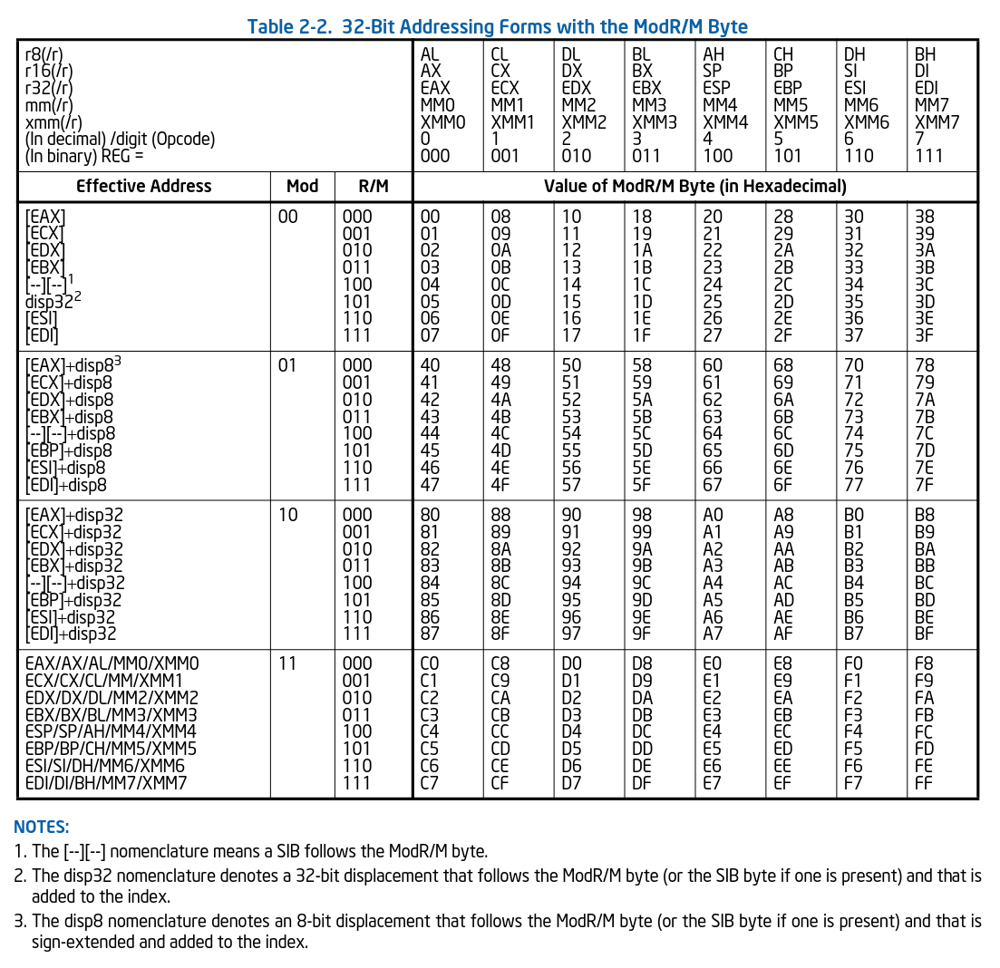

AI Fails
Here are some question that AI still can't answer correctly. If AI technology has improved, please drop me an email so I can update the page. (NOTE: sometimes the AI mistakes are intermittent/random, so please test multiple times!)
-
Does the following Python code crash? If so, how? If not, what's the output?
try: raise Exception() except Exception as __builtins__: pass print(type(__builtins__))ChatGPT claims that <class 'Exception'> would be printed, since the
except Exception as __builtins__:line is run and assigns the resulting exception object to__builtins__. This is true, however at the end of an exception handler clause, Python runs the equivalent ofdel excCapture, as a bandaid for not having proper scopes for exception handlers. This causes the shadowing__builtins__to be deleted, and interestingly (at least on CPython), replaces the global__builtins__object with its instance dict*, as if__builtins__ = vars(__builtins__)has been run. Thus, <class 'dict'> is the final output.* I've done some more research, and it seems that the dict
__builtins__is always there, but in the__main__module and there only, the equivalent ofimport builtins as __builtins__has been run before your code executes. In any case,del-eting the dict multiple times won't cause a crash and so whether you're in the main module doesn't actually affect the outcome. -
What's the output of the following Python code?
class Abomination(zip("Hello, "), zip("world!")): pass print(*map("".join, map(__import__("functools").partial(sum, start=()), map(list, map(__import__("operator").itemgetter(1),Abomination)))), sep="")ChatGPT says that the code is erroneous, and that seems like a reasonable judgement (what is
zipdoing in the superclass list?!?!). However, it actually works (at least on CPython)! Normally, if you writeclass A(B):, then class A will inherit the metaclass of class B as well. If you derive from two classes, Python will check that the metaclasses are compatible. Recall that a type's metaclass is just the type of the type, e.g.type(int) is typetells us that the metaclass ofintistype. So, what's the metaclass of our (aptly named)Abomination? Well,zipis a class, so the two "base classes" are justzipobjects. This means the metaclass ofAbominationis thezipclass! Therefore, the class definition is equivalent toAbomination = zip("Abomination", (zip("Hello, "), zip("world!")), magicProps), wheremagicPropsincludes various dunder methods. Recalling thatzipstops when the shortest iterable runs out, we can see thatAbominationwould yield two values,("A", zip("Hello, "), magicPropName1)and("b", zip("world!"), magicPropName2). We first mapitemgetter(1)overAbomination, which extracts the second item of these two tuples, namelyzip("Hello, ")andzip("world!"). We then map thesumfunction bound to an empty tuple over each of thosezipobjects. With a single argument,zip("abc")(for example) yields tuples("a",),("b",)and("c",), andsumbasically concatenates these tuples into one, giving us("a", "b", "c"). This transformation is applied to the strings"Hello, "and"world!", giving ustuple("Hello, ")andtuple("world!")respectively. We finally apply"".join()to the combined tuples to turn them into strings, and they are both passed intoprint, with no separator in between. The final effect is, of course, identical toprint("Hello, world!").
What does 8D C0 in x86 machine code do?
ChatGPTChatGPT says that this instruction is effectively a NOP, which is wrong. 8D corresponds to the LEA instruction, which takes a register and a memory address, both encoded in the ModR/M byte (C0 in this case). Here's the ModR/M encoding table from the Intel SDM:

As you can see, ModR/M byte C0 corresponds to the register argument EAX (from the cell containing C0, go up to the top header) and the register or memory argument (read left, to the column that says "Effective Address") of register EAX. Notably, EAX is a register, not a memory address, so this instruction is invalid. Reading from the "Protected Mode Exceptions" table for the LEA instruction, we see that exception #UD (invalid instruction) is raised in this case. In effect, this is the same as theUD2 instruction, not NOP.